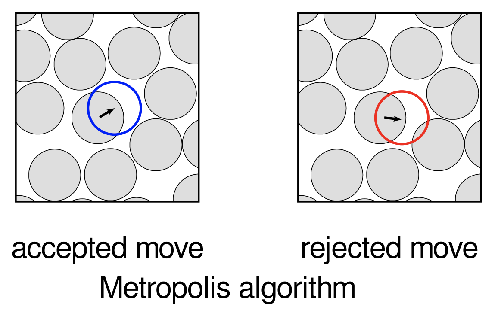

Monte Carlo methods
A set of algorithms that use randomness in an essential way
Sampling from a distribution
Suppose we have a source of samples of random variable \(X\) described by a particular probability density function \(p_X\)
Common shorthand notation is \(x\sim p_X\)
By definition probability of drawing a sample in the region \([x, x+dx]\) is \(p_X(x)dx\)
Now map samples using a function \(f\)
What is the probability density \(p_Y\) of \(y=f(x)\)?
New probability density is defined in same way: probability of \(y\) lying in region \([y, y+dy]\) is \(p_Y(y)dy\)
Since \(x\) is mapped deterministically to \(y\) these two probabilities must be the same \[ p_X(x)dx = p_Y(y)dy \] or \[ p_Y(y)=p_X(x)\Bigg\lvert \frac{dx}{dy}\Bigg\rvert= \frac{p_X(x)}{|f'(x)|},\qquad x=f^{-1}(y) \]
Can create samples from an arbitrary probability distribution by choosing an invertible map \(f\) appropriately
\[ p_Y(y)=p_X(x)\Bigg\lvert \frac{dx}{dy}\Bigg\rvert= \frac{p_X(x)}{|f'(x)|},\qquad x=f^{-1}(y) \]
- If \(p_X\) is standard uniform distribution on \([0,1]\) then \(f(x)\) is the inverse of the cummulative probability distribution of \(Y\)
\[ f^{-1}(y) = \int^y_{-\infty} p_Y(y')dy' \]
\[ p_Y(y)=p_X(x)\Bigg\lvert \frac{dx}{dy}\Bigg\rvert= \frac{p_X(x)}{|f'(x)|},\qquad x=f^{-1}(y) \]
- Same approach works in higher dimensions: \(\big\lvert \frac{dx}{dy}\big\rvert\) is replaced by the inverse of the Jacobian determinant.
Box–Muller transform
- Take two independent samples from a standard uniform distribution \(u_{1,2}\) and form \[ \begin{align} x &= \sqrt{-2\log u_1}\cos(2\pi u_2)\\ y &= \sqrt{-2\log u_1}\sin(2\pi u_2). \end{align} \] \(x\) and \(y\) are independent samples from a standard normal distribution.
Various functions available in
numpy.randommodule to generate random arrays drawn from a variety of distributions[Box–Muller now retired in favour of Ziggurat algorithm]
import numpy.random as random
import numpy as np
import matplotlib.pyplot as plt
mu, sigma = 0, 0.1 # mean and standard deviation
s = random.normal(mu, sigma, size=10000)
count, bins, ignored = plt.hist(s, 30, density=True)
plt.plot(bins, 1/(sigma * np.sqrt(2 * np.pi)) *
np.exp( - (bins - mu)**2 / (2 * sigma**2) ),
linewidth=2, color='r')
plt.xlabel("Value")
plt.ylabel("Frequency")
plt.show()For complex multivariate (i.e. high dimensional) distributions there is no general recipe to construct an appropriate \(f\)
One very recent application of these ideas is in machine learning models called normalizing flows that use a mapping \(f\) parameterized by a neural network.
Workhorse for sampling from complicated distributions is Markov chain Monte Carlo
Monte Carlo method
General term for variety of numerical methods that use randomness in some way.
Two main classes encountered in physics are:
Interpret a numerical evaluation as an expectation value of some random variable and use sampling to estimate it. Monte Carlo integration is an example of this idea.
Sampling from a complex probability distribution (which may include taking expectation values). Example: Markov chain Monte Carlo.
Monte Carlo integration
- Dumb way to find \(\pi\)
max_samples = 10000
inside = 0
areas = []
for sample in range(1, max_samples + 1):
x = random.uniform(-1, 1)
y = random.uniform(-1, 1)
if x ** 2 + y ** 2 <= 1:
inside += 1
areas.append(4 * inside / sample)
plt.plot(np.arange(1, max_samples + 1), areas)
plt.plot(np.arange(1, max_samples + 1), np.pi * np.ones(max_samples), linestyle='dashed')
plt.show()
- Important feature of MC: relative error with \(N\) samples is typically \(\propto N^{-1/2}\) because the variance of a sum of \(N\) iid variables is \(\propto N^{1/2}\)
Suppose we have a multidimensional integral to evaluate over some domain \(D\) of volume \(V_D\) \[ I(f,D) = \int_D f(\mathbf{x}) d\mathbf{x} \]
If we can sample points uniformly within \(D\), then an estimate for the integral is
\[ I(f,D) = \frac{V_D}{N}\sum_{i=1}^N f(\mathbf{x}_i) \]
\[ I(f,D) = \frac{V_D}{N}\sum_{i=1}^N f(\mathbf{x}_i) \]
- Why does this work? Uniform distribution has constant probability density \(1/V_D\) so average of \(f(\mathbf{x}_i)\) with respect to this uniform distribution is just our integral
\[ \bar f = \frac{1}{V_D}\int f(\mathbf{x})d\mathbf{x} \]
- Take many samples to estimate this average
In our simple example \(f(\mathbf{x})\) would be a “top hat” function that is one inside the circle
Monte Carlo integration comes into its own for high dimensional problems. For low dimensional integrals quadrature methods in
scipy.integrateare preferable:
(0.9999999999999535, 3.96115362732985e-11)- As for ODE solvers, there is a lot of detail in the implementation to do with how intervals are chosen, etc.
Importance sampling
If our function \(f(\mathbf{x})\) has regions where it is very small, there is not much point in sampling its value there
If we can sample from a distribution where samples tend to fall in the region where \(f(\mathbf{x})\) is large, it will probably be better to use that
- In this case we calculate weighted average using the probability density \(p_\text{sample}(\mathbf{x})\) of the sampling distribution
\[ I(f,D, p_\text{sample}) = \frac{1}{N}\sum_{i=1}^N \frac{f(\mathbf{x}_i)}{p_\text{sample}(\mathbf{x}_i)} \]
- This works because the average of each term is just the integral we want
\[ \overline{\frac{f(\mathbf{x})}{p_\text{sample}(\mathbf{x})}} = \int \frac{f(\mathbf{x})}{p_\text{sample}(\mathbf{x})} p_\text{sample}(\mathbf{x})d\mathbf{x} = \int f(\mathbf{x})d\mathbf{x} \]
\[ I(f,D, p_\text{sample}) = \frac{1}{N}\sum_{i=1}^N \frac{f(\mathbf{x}_i)}{p_\text{sample}(\mathbf{x}_i)} \]
Benefit of this approach is that it can lead to a drastic reduction in the variance of the estimator
Extreme example: if \(f(\mathbf{x})\propto p_\text{sample}(\mathbf{x})\), and even a single sample leads to perfect estimate with no uncertainty!
General technique is called Importance sampling
In naive form, needs both an explicit form for \(p_\text{sample}(\mathbf{x})\) and the ability to generate samples, which is rather restrictive
There are many elaborations of this idea, including multiple distributions as well as adaptive sampling to “discover” the right region for sampling
Markov chain Monte Carlo
- Suppose you want to generate configurations at random (i.e. with a uniform distribution) from a “gas” of hard disks

First guess: start adding coins at random, and if you get an overlap, try again until you don’t
Obviously this will become inefficient as the box fills up, and most attempts fail.
Worse, it doesn’t in fact yield a uniform distribution!
Example 1 (Metropolis algorithm for hard disks)
- Fix the number of disks and an initial configuration (some regular lattice configuration, say).
- Pick a disk at random and attempt (or propose) to move it by a small random amount (i.e. random direction; random small magnitude).
- If this results in the moved disk intersecting another, reject the move, leaving the disk where it is. Otherwise, accept the move.
- Repeat 2. and 3. many times.
.
Simplest example of the Metropolis–Hastings algorithm, the first Markov chain Monte Carlo (MCMC) algorithm.
Goal of MCMC is to come up with a sequential random process (a Markov chain) that generates (usually after many steps) a sample from a particular distribution
Markov chains
You know the random walk, perhaps as a model for diffusion
At each step make a move in a random direction, independently of your earlier moves
After many steps these random moves gives rise to a distribution of possible locations
A random walk is the simplest example of a Markov chain
A Markov chain is a sequence of random variables \(X_n\), each having a distribution that is is conditional on the value of the previous one
Defined in terms of transition probabilities \(p(X_{n}=x_n|X_{n-1}=x_{n-1})\) (hence a “chain”)
Probability of a particular sequence \(X_1=x_1\ldots X_n=x_n\) is therefore
\[ p(x_n|x_{n-1})p(x_{n-1}|x_{n-2})\cdots p(x_2|x_{1})p^{(1)}(x_1) \]
- \(X_1\) has no “parent” so is not conditional on any other value
What is marginal distribution \(p^{(n)}(x_n)\) of the final variable?
For a random walk this is easy, as \(x_n\) typically represents a displacement that is a sum of iid increments
In general, marginal distribution is
\[ p^{(n)}(x_n)=\sum_{x_{n-1},\ldots x_1}p(x_n|x_{n-1})p(x_{n-1}|x_{n-2})\cdots p(x_2|x_{1})p^{(1)}(x_1) \]
Sums over all possible values that the random variables might take in the state space of the problem
Could be finite or infinite in number.
\[ p^{(n)}(x_n)=\sum_{x_{n-1},\ldots x_1}p(x_n|x_{n-1})p(x_{n-1}|x_{n-2})\cdots p(x_2|x_{1})p^{(1)}(x_1) \]
- Marginal distribution results from acting \(n-1\) times on the vector of values of \(p^{(1)}_j\equiv p^{(1)}(j)\) with transition matrix with elements \(\mathsf{P}_{jk}=p(j|k)\)
\[ \mathbf{p}^{(n)} = \mathsf{P}^{n-1}\mathbf{p}^{(1)}. \]
- In a single step the marginal probabilities are updated as
\[ \mathbf{p}^{(n)} = \mathsf{P}\mathbf{p}^{(n-1)} \]
\(\mathsf{P}\) has some structure:
- Matrix elements are positive, as they represent probabilities, and each row sums to one \[ \sum_j \mathsf{P}_{jk} = 1. \] (since \(\mathsf{P}_{jk}=p(j|k)\))
- Such matrices are called stochastic
\[ \mathbf{p}^{(n)} = \mathsf{P}\mathbf{p}^{(n-1)} \]
After many steps \(\mathbf{p}^{(n)}\) tends to converge to a stationary distribution \(p^{(n)}\to\boldsymbol{\pi}\)
If it exists, this distribution must satisfy
\[ \boldsymbol{\pi} = \mathsf{P}\boldsymbol{\pi}. \]
- An eigenvector of \(\mathsf{P}\) with eigenvalue one. This property is guaranteed by the Perron–Frobenius theorem
I would like to generate samples from some \(\boldsymbol{\pi}\) Can I find a \(\mathsf{P}\) that has \(\boldsymbol{\pi}\) as a stationary distribution?
If so I can simulate the Markov chain for a long time and end up with a sample from \(\boldsymbol{\pi}\).
Trivial answer: \(\mathsf{P}_{jk}=\boldsymbol{\pi}_j\). That is, jump straight to the stationary distribution no matter what starting state
But we are interested in highly complicated distributions over large state spaces
What we really want is to approach a complicated distribution by making many transitions with simple distributions
\[ \mathsf{P}_{jk}\pi_k = p(j|k)\pi_k = p(j,k) \] is the joint distribution of seeing state \(k\) followed by state \(j\) in the stationary distribution
Reversible Markov chain is one where \(p(j,k)=p(k,j)\)
Any transition is equally likely to happen forward in time as backward
The condition for reversibility is known as detailed balance
\[ \mathsf{P}_{jk}\pi_k = \pi_j\mathsf{P}_{kj}. \]
\[ \mathsf{P}_{jk}\pi_k = \pi_j\mathsf{P}_{kj}. \]
Stronger than conditionfor a stationary state: easier to check
Metropolis algorithm for hard disks satisfies detailed balance for a uniform distribution
When \(\boldsymbol{\pi}\) has more structure, designing an appropriate transition matrix is harder
Idea is to generalize hard disk approach by separating transition into a proposal distribution \(p_\text{prop}(j|k)\) and an acceptance distribution \(p_\text{acc}(a=0,1|j\leftarrow k)\) that gives probability of a move from \(k\) to \(j\) being accepted (\(a=1\)) or rejected (\(a=0\))
Probability of moving from \(k\) to \(j\) is then
\[ p(j|k) = p_\text{acc}(a=1|j\leftarrow k) p_\text{prop}(j|k). \]
- Substituting this into the detailed balance condition \[ \frac{p_\text{acc}(a=1|j\leftarrow k)}{p_\text{acc}(a=1|k\leftarrow j)} = \frac{\pi_j}{\pi_k}\frac{p_\text{prop}(k|j)}{p_\text{prop}(j|k)}. \]
\[ \frac{p_\text{acc}(a=1|j\leftarrow k)}{p_\text{acc}(a=1|k\leftarrow j)} = \frac{\pi_j}{\pi_k}\frac{p_\text{prop}(k|j)}{p_\text{prop}(j|k)}. \]
Any \(p_\text{acc}\) that satisfies this relation for all \(j\) and \(k\) will do
Metropolis choice is
\[ p_\text{acc}(a=1|j \leftarrow k) = \min\left(1, \frac{\pi_j}{\pi_k}\frac{p_\text{prop}(k|j)}{p_\text{prop}(j|k)}\right) \]
Example 2 (Metropolis algorithm)
- Starting from state \(k\) sample a next state \(j\) from the proposal distribution \(p_\text{prop}(j|k)\).
- Accept the proposal with probability \(p_\text{acc}(a=1|j \leftarrow k)\) and move to state \(j\). Otherwise reject the proposal and stay in state \(k\).
- Repeat 1. and 2. many times.
MCMC has benefit of being embarrassingly parallel
If you want to average something over \(\boldsymbol{\pi}\), just run the algorithm many times independently and average the results
This is perfect for parallel computing
To perform a move one has to sample from \(p_\text{prop}(j|k)\) and from \(p_\text{acc}(a|j \leftarrow k)\)
Proposal has to be tractable, like the small shift in position for the hard disk case
Many of the \(j\)s suggested may correspond to very small \(\pi_j\), and therefore a very low acceptance probability
For hard disks at high density many proposed moves will give rise to overlap of disks and be rejected
Many steps are required to have one successful update of the simulation. This kind of slowdown is a common feature of MCMC methods applied to complex distributions
Statistical mechanics
Natural source of complex distributions in physics
Probability of finding a statistical mechanical system in a microstate \(\mathbf{x}\) with energy \(\mathcal{E}(\mathbf{x})\) is \[ p(\mathbf{x})=\frac{\exp\left[-\beta \mathcal{E}(\mathbf{x})\right]}{Z}, \] \(Z\) is normalizing constant (partition function)
Central problem of statistical mechanics is computing ensemble averages of physical quantities
Principal difficulty is intractability of these averages
For a classical gas, \(\mathbf{x}\) gives position of each gas molecule \(\mathbf{x}=(\mathbf{x}_1,\ldots \mathbf{x}_N)\) and average is a \(3N\)-dimensional integral
Integral is tractable is when gas is noninteracting (ideal) \[ \mathcal{E}(\mathbf{x}) = \sum_{n=1}^N \mathcal{E}_1(\mathbf{x}_n) \] as it factorizes over the particle coordinates
As soon as we introduce interactions things get a lot harder \[ \mathcal{E}(\mathbf{x}) = \sum_{n<m}^N \mathcal{E}_2(\mathbf{x}_n,\mathbf{x}_m) \]
Same issue arises in models involving discrete random variables
In Ising model a configuration corresponds to fixing values of \(N\) “spins” \(\sigma_n=\pm 1\) with an energy function of the form
\[ \mathcal{E}(\sigma)=\sum_n h_n\sigma_n + \sum_{m<n} J_{mn}\sigma_m\sigma_n. \]
- Coupling between spins causes problems / interest
Most pessimistic assessment is that to calculate an average we are going to have sum over \(2^N\) configurations
Computing the partition function \(Z\) that normalizes the average (or which gives the free energy via \(F=-k_\text{B}T\log Z\)) is another such sum
Monte Carlo simulation is a much more attractive alternative
MCMC can be used to generate samples from \(p(\sigma)\) which are then used to estimate the averages of interest (e.g. average energy \(\langle\mathcal{E}(\sigma)\rangle\), average magnetization \(\langle\sum_n \sigma_n\rangle\), etc.)
MCMC updates for the Ising model
Simple proposal: pick each spin in turn in some order and try to flip it.
Form of \(p(\sigma)\) means that, although we cannot compute the probabilities explicitly, we can calculate ratios
For two configurations that differ only by \(\sigma_n=\pm 1\) we have \[ \begin{align} \frac{p(\sigma_n=1|\sigma_{m\neq n})}{p(\sigma_n=-1|\sigma_{m\neq n})} &= \exp\left[-2\beta \left(h_n+\sum_{m\neq n} J_{mn}\sigma_m\right)\right]\\ &\equiv \exp\left[-\beta\Delta \mathcal{E}\right] \end{align} \] where \(\Delta \mathcal{E}\) is the energy difference
Alternative to Metropolis is Heat bath algorithm (or Glauber dynamics or Gibbs sampling)
Since we can calculate the influence of the spin’s environment (the “bath”), we can just choose the spin’s orientation with corresponding probabilities
Only two probabilities so the ratio is all we need and we get
\[ p(\sigma_n=\pm 1|\sigma_{m\neq n}) = \frac{1}{1+ e^{\pm\beta \Delta \mathcal{E}}} \]
Example 3 (Heat bath algorithm)
- Pick a spin \(n\)
- Compute \(\Delta E\), the energy difference between \(\sigma_n=\pm 1\).
- Set \(\sigma_n=\pm 1\) with probabilities given above
- Repeat 1-3 many times
class IsingModel:
def __init__(self, L):
self.L = L
self.spins = np.random.choice(a=[1, -1], size=(L, L))
stagger = np.empty(self.L, dtype = bool)
stagger[::2] = True
stagger[1::2] = False
self.mask = np.logical_xor(stagger[:, np.newaxis], stagger[np.newaxis, :])
def gibbs_update(self, beta, sublattice):
fields = np.roll(self.spins, 1, 0) + np.roll(self.spins, -1, 0) + np.roll(self.spins, 1, 1) + np.roll(self.spins, -1, 1)
delta_E = 2 * fields
spin_up_probabilities = 1 / (1 + np.exp(- beta * delta_E))
new_spins = 2 * (np.random.rand(self.L, self.L) < spin_up_probabilities) - 1
self.spins = np.choose(np.logical_xor(sublattice, self.mask), [self.spins, new_spins])
def glauber_update(self, beta):
x, y = np.random.randint(self.L, size=2)
fields = 0
for neighbour in [((x + 1) % self.L, y), ((x - 1) % self.L, y), (x, (y + 1) % self.L), (x, (y - 1) % self.L)]:
fields += self.spins[neighbour]
delta_E = 2 * fields
spin_up_probability = 1 / (1 + np.exp(- beta * delta_E))
if np.random.rand() < spin_up_probability:
self.spins[x, y] = 1
else:
self.spins[x, y] = -1
def wolff_update(self, beta):
initial_x, initial_y = np.random.randint(self.L, size=2)
initial_spin = self.spins[initial_x, initial_y]
cluster = deque([(initial_x, initial_y)])
add_prob = 1 - np.exp(-2 * beta)
while len(cluster) != 0:
x, y = cluster.popleft()
if self.spins[x, y] == initial_spin:
self.spins[x, y] *= -1
for neighbour in (((x + 1) % self.L, y), ((x - 1) % self.L, y), (x, (y + 1) % self.L), (x, (y - 1) % self.L)):
if self.spins[neighbour] == initial_spin:
if np.random.rand() < add_prob:
cluster.append(neighbour)